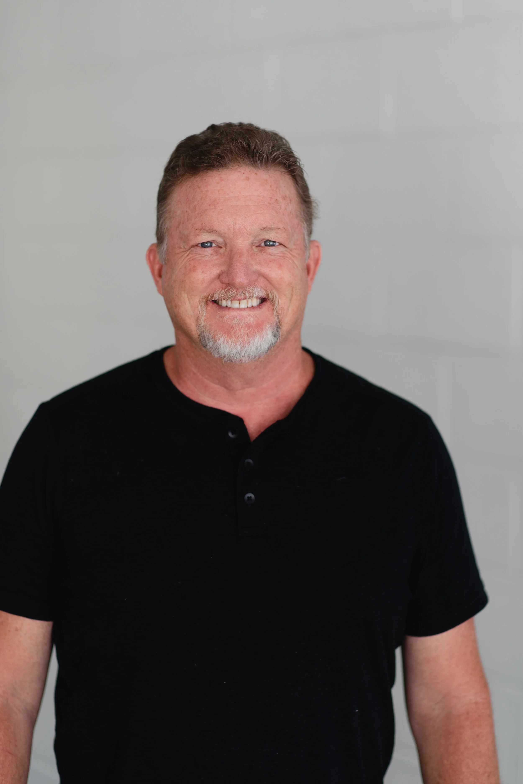
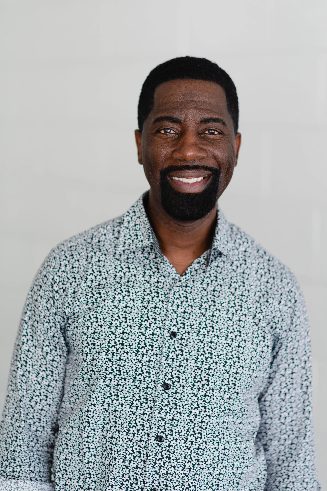
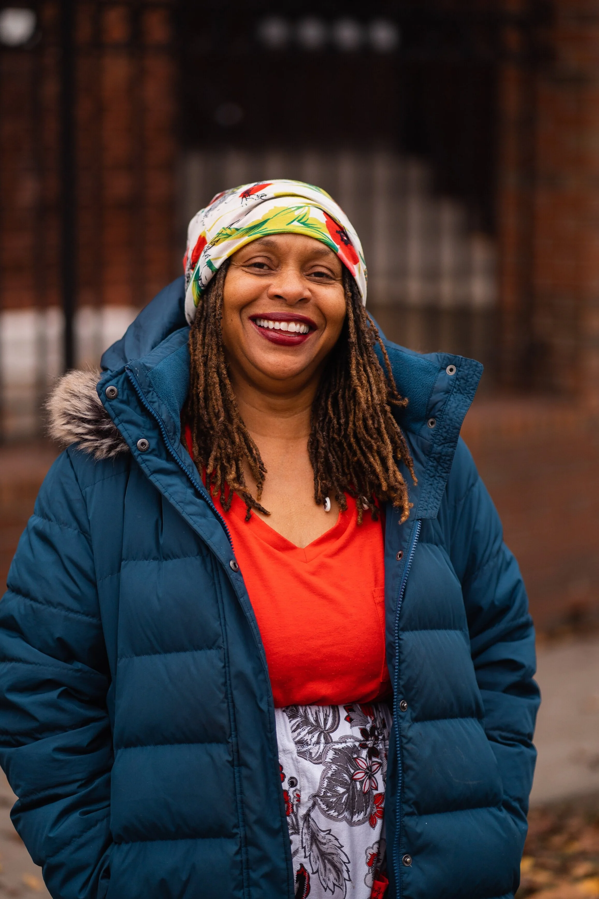
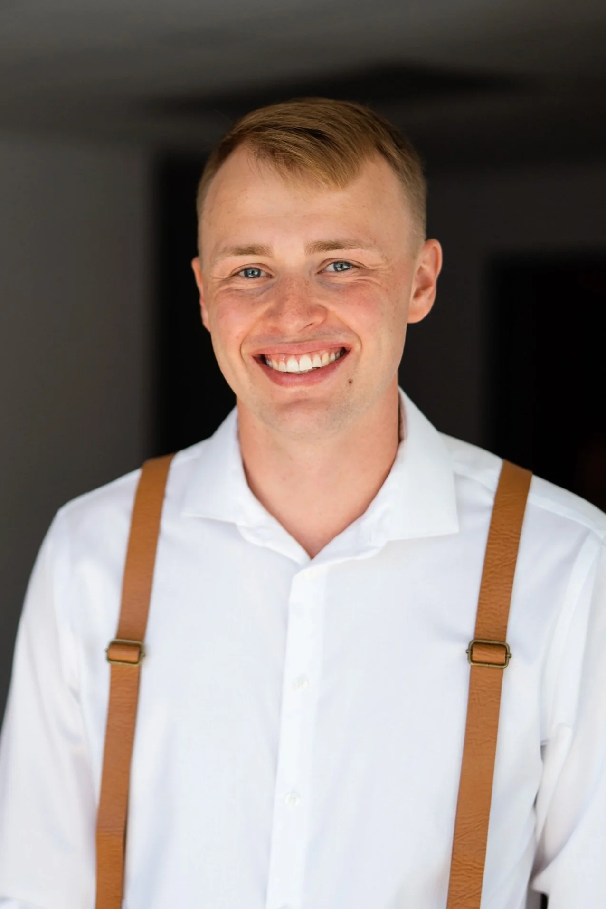
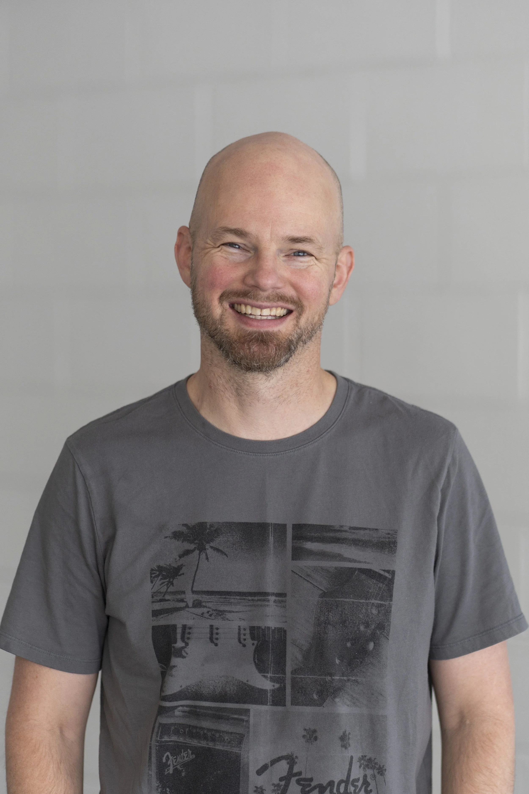
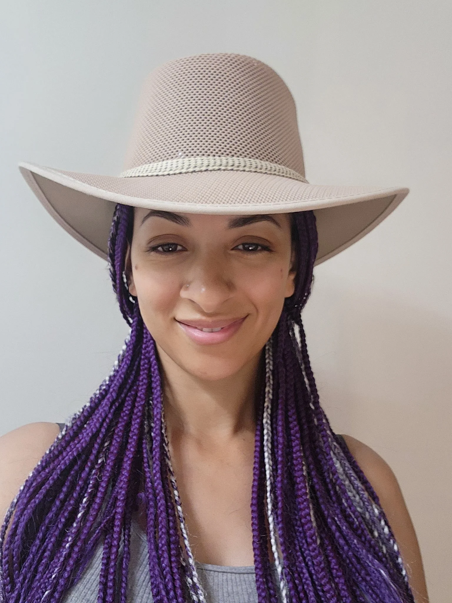
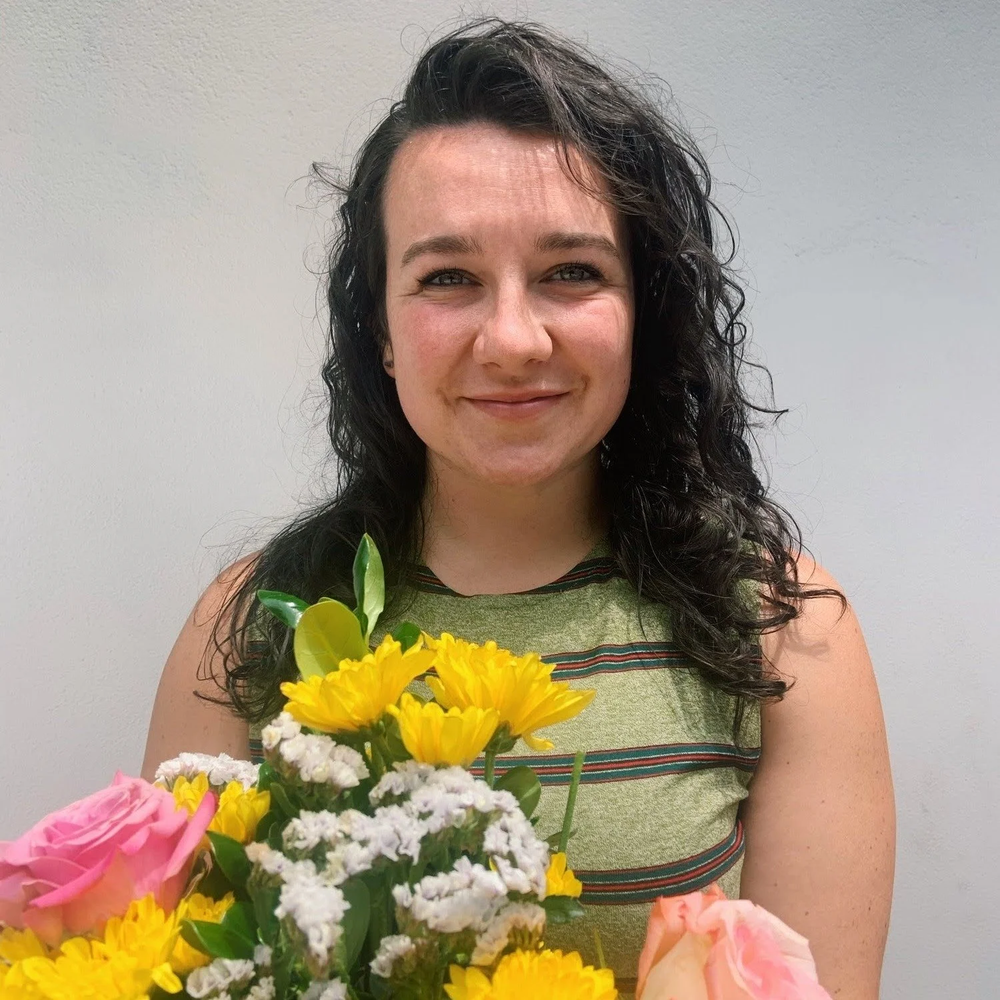
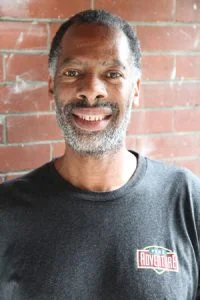
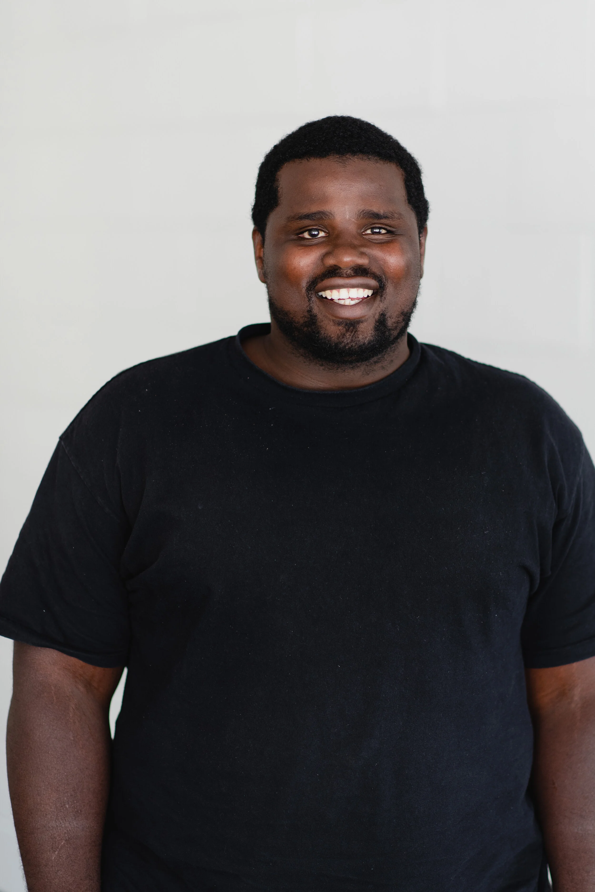
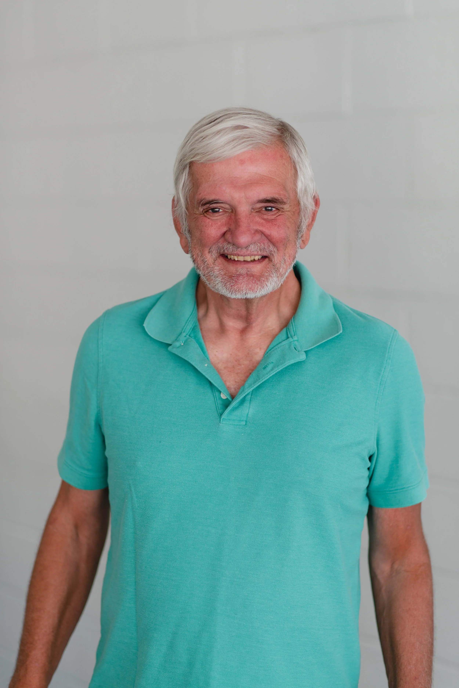

OUR STAFF

BRUCE MCGREGOR
PRESIDENT
During school days at Wheaton College, Bruce worked as director of Young Life in Glen Ellyn, Illinois. In 1983, Bruce moved to the inner city of Kansas City and began working with an urban ministry. That job led to a teaching position with De La Salle High School, an alternative school for urban youth. From 1986 to 1997, he worked with a suburban church as a teacher and pastor. As a pastor, Bruce led numerous mission trips. During this period, Bruce earned his Master of Divinity degree and Doctorate of Ministry which focused on leadership development. Bruce founded Freedom Fire in 1997. Since that time the ministry has expanded and includes two sister oganizations, Freedom Works (focused on holistic care), and Shalom Retreat Center (120 acre retreat facility Near Mound City, KS). In 2009, Bruce helped start Freedom Covenant Church.

MELVIN COLE
DIRECTOR OF PASTORAL CARE
Melvin Cole has been serving in Urban Ministry for 20 years. He has served as a Youth Pastor in a local Church. He was part of a National Ministry called Young Life from 2000-2005. He joined Freedom Fire in 2006, where he serves over the Teen Ministry and Co-Pastor at Freedom Covenant. Melvin has received training through the Berean Bible School (Global Institute), Young Life Leadership Training, Devos Urban leadership, and currently The Urban Ministry Institute. He lives in Kansas City with his wife, Marie. They have two grown children and one granddaughter.
MEGAN BATEY
Youth Director
Megan has been involved in Freedom Fire Urban Ministries for last 23 years. At the age of five she gave her life to Christ at a Freedom Fire Friday Night Outreach. She graduated from Wheaton College in 2014 and has been on staff ever since. She now works for Freedom Fire full time as a Youth Director.

DEBORAH WHITE
COMMUNITY MINISTRY DIRECTOR
Deborah White joined the staff part time in 2006 at the Guinotte site where she was living at that time. She lead that sight for over ten years and credits her involvement with Freedom Fire for helping her get on the “Narrow Road.” She is a wife, mother, grandmother, a lifelong KCMO Resident, and a Rockhurst University graduate. She also loves the hobby of gardening.

JT BATEY
MINISTRY & DISCIPLESHIP DIRECTOR
JT has been with Freedom Fire since returning from Australia in February of 2019. JT leads our teen location and is planting Freedom Church Downtown with his wife that he also just so happened to meet at Freedom Fire as well, Megan. Megan and JT live downtown just a short 5 minutes from the offices. They are in love with Jesus and plan to live their lives out in Kansas City sharing the Good News of Jesus with everyone they can.

DAN RICKETTS
Ministry assistant & Worship Leader
Daniel, a former elementary school teacher turned Worship Pastor at Maywood Baptist Church, cherishes family time with his wife, Leslie, and their two teenage children, Grace and Isaac. Daniel also enjoys basketball and writing songs for both kids and adults. He serves with Freedom Fire on Friday nights with the youth programs and Monday nights at Worship Wagon.
TAYLOR STEELE
YOUTH WORKER
Taylor started her professional career working with students in the Christian nonprofit realm in 2020. Two years later, she began volunteering with Freedom Fire. Since then, she has completed a year-long student ministry residency, graduated with a bachelor’s degree in Organizational Leadership, and joined the Freedom Fire staff in Fall 2024. She loves living in downtown KCMO, building relationships with families, and pointing people to Jesus.
NICOLE BARDWELL
YOUTH WORKER
Nicole has been connected with Freedom Fire Urban Ministries since moving to Kansas City in 2019 and then joined staff in 2024. She graduated from Biola University in 2015 with a degree in Intercultural Studies with an emphasis in Community Development. Nicole is passionate about building relationships and sharing the Gospel. She also enjoys spending time with her family, camping, and learning new skills.

caroline kizine
YOUTH WORKER
Carolyn Kizine (Palmer) grew up in Freedom Fire Ministries, where her father, Coach Will, began serving in the ministry in 2000. Her journey of serving children began at a young age. At 15 years old, she began working at Camp Shalom where she served as a camp counselor for several years. This began what would become more than 20 years of working with children. She has officially been serving on staff with Freedom Fire since the summer of 2025.
Carolyn attended Paseo Middle School, Central High School and graduated from Whitefield Academy. Today, she is a single mother of four daughters, and one of her greatest desires is to glorify God in everything she does while raising her children in the fear and admonition of the Lord.
Carolyn is grateful for the opportunity to serve children and families through Freedom Fire and to be part of a ministry that has been such an important part of her life for many years. Her heart is to love, encourage, and point the next generation toward Christ.
FRIDAY NIGHT LEADERS:

ALLIE CACY
Friday Night Site Coordinator at Guinotte
Allie grew up in Kansas City in a large family and began volunteering as a tutor at age 11. After graduation from high school she attended the University of Missouri – Kansas City and studied psychology. Each summer she has served as a counselor at Camp Shalom, and has always enjoyed time with the kids from the urban community. Strong leadership gifts and cheerful heart make her an ideal leader for a Friday Night Outreach. We love having Allie on our staff, and the kids love her too!

WILLIAM PALMER
MINISTRY ASSISTANT
Will joined the staff as a part-time employee in 2001. He grew up in the urban core and knows the pressures and needs of the community well. Previously, he worked for The Sky’s the Limit camp and a local retirement home. His variety of skills and servant’s heart has helped strengthen the ministry of Freedom Fire.
ANDRE HARRIS
FRIDAY NIGHT SITE COORDINATOR
Andre has been involved in Freedom Fire Urban Ministries since he lived in TB Watkins projects.

LENARD MANUEL
Youth Director
Lenard grew up a part of Freedom Fire starting in 5 th grade. He got involved in Bible clubs, tutoring, summer camps, and eventually earned a scholarship to Kansas City Christian School, graduating in 2010. He studied Social Work at Dordt University in Iowa, graduating in 2014. He served as a mentor at a youth residential program, and then worked with at-risk youth in Omaha, Nebraska for 2 years before joining the Freedom Fire staff in 2018. Lenard and his wife Becca married in 2018.
IN MEMORIAM:

ALLAN CHUGG
COMMUNITY MINISTRY DIRECTOR
Allan served as a volunteer at Freedom Fire for years. He joined the team as a staff member in 2016. Before that, he served for over 30 years as a Bible teacher, school administrator, and coach. With years of teaching experience and a master’s in education, he brought expertise to our education programs. He also provided life coaching and oversees one of our Worship Wagon locations.